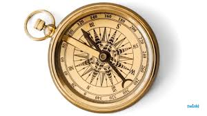
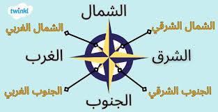

🎯 الأهداف الإجرائية: في نهاية الدرس ستكون قادراً على أن:
1. الخريطة وعناصرها الأساسية: الخريطة هي لغة جغرافية نستخدمها لفهم العالم، ونحتاج لـ 5 عناصر لقراءتها:
2. الصور الجوية والفضائية:
🔹 الصور الجوية: يتم التقاطها بالطائرات من مكان مرتفع وتعطي صورة حقيقية وتفصيلية.تساعد في رسم خرائط مفصله
🔹 الصور الفضائية: يتم التقاطها بالأقمار الصناعية وتغطي مساحات أكبر.



✍️ نشاط الدرس الأول:
🎯 الأهداف الإجرائية:
🔹 المصادر الأولية: كل ما نُقش أو دُوّن من أشخاص عاصروا الحدث.فهي تمثل الدليل المباشر على الحدث أو الموضوع. ومن أمثلتها الوثائق الأصلية مثل العقود والمعاهدات والقوانين، والمذكرات واليوميات الشخصية، والرسائل، والصور الفوتوغرافية التي التُقطت وقت الحدث، والتسجيلات الصوتية أو المرئية، وكذلك الآثار التاريخية وشهادات شهود العيان. وتتميز هذه المصادر بأنها أقرب للحقيقة وتعكس الواقع بشكل مباشر، لكنها قد تكون أحيانًا غير مكتملة أو تحتاج إلى تفسير.
🔹 المصادر الثانوية: كُتبت بعد مرور فترة طويلة كالكتب والموسوعات.تعتمد على المصادر الأولية في جمع المعلومات ثم تقوم بشرحها أو تحليلها أو تفسيرها، أي أنها ليست مرتبطة مباشرة بالحدث بل تعتمد على ما كُتب أو سُجل عنه. ومن أمثلتها الكتب الدراسية، والمراجع العلمية، والدراسات والأبحاث، والمقالات التحليلية، والموسوعات، والأفلام الوثائقية في بعض الأحيان. وتكمن أهمية هذه المصادر في أنها تسهّل فهم المعلومات وتجمع بين أكثر من مصدر، لكنها قد تحمل أحيانًا رأيًا أو تفسيرًا شخصيًا من الكاتب. وبذلك يمكن القول إن المصادر الأولية تقدم المعلومات الأصلية المباشرة، بينما المصادر الثانوية تقدم شرحًا وتحليلًا لهذه المعلومات

✍️ نشاط الدرس الثاني:
1. جغرافية العالم: يتكون العالم من 7 قارات و5 محيطات.حيث يتكون العالم من سبع قارات وهي: آسيا، إفريقيا، أوروبا، أمريكا الشمالية، أمريكا الجنوبية، أستراليا، والقارة القطبية الجنوبية. وتُعد القارات هي المساحات الكبيرة من اليابس التي يعيش عليها الإنسان وتختلف في مساحتها ومناخها وعدد سكانها ومواردها الطبيعية. أما بالنسبة للمياه، فإن العالم يحتوي على خمس محيطات وهي: المحيط الهادئ، والمحيط الأطلسي، والمحيط الهندي، والمحيط المتجمد الشمالي، والمحيط المتجمد الجنوبي. وتغطي هذه المحيطات معظم سطح الأرض، وهي مهمة جدًا لأنها تؤثر على المناخ وتساعد في تنظيم درجات الحرارة، كما تُعد مصدرًا مهمًا للغذاء والثروة السمكية وطرق النقل البحري. وبذلك فإن العالم يتكون من يابس يتمثل في القارات، ومياه تتمثل في المحيطات، وكل جزء منهم له دور مهم في توازن الحياة على كوكب الأرض
2. عبقرية موقع مصر: تقع في قلب العالم القديم، وفي الركن الشمالي الشرقي لأفريقيا.وفي نفس الوقت هي بوابة طبيعية تربط بين قارة أفريقيا وقارة آسيا عبر شبه جزيرة سيناء، كما أنها قريبة من قارة أوروبا عن طريق البحر المتوسط. وهذا الموقع جعلها نقطة وصل بين قارات العالم القديم الثلاث، مما ساعد على قيام التجارة والتبادل الثقافي والحضاري منذ آلاف السنين. كما أن مرور نهر النيل داخل مصر وفر لها حياة زراعية مستقرة، بينما ساعد موقعها البحري على وجود سواحل طويلة على البحر المتوسط والبحر الأحمر، وهو ما جعلها تتحكم في طرق التجارة البحرية. وزادت أهمية هذا الموقع بعد إنشاء قناة السويس التي ربطت بين البحرين الأحمر والمتوسط، فاختصرت وقت ومسافة السفر بين الشرق والغرب، مما جعل مصر مركزًا عالميًا مهمًا للملاحة والتجارة. لذلك يُقال إن موقع مصر “عبقري” لأنه يجمع بين أهمية استراتيجية واقتصادية وحضارية كبيرة عبر التاريخ

✍️ نشاط الدرس الثالث:
1. تقسيم مصر: تم تقسيم مصر إلى 27 محافظة تفصل بينها حدود إدارية.وهذه المحافظات لا تفصل بينها حدود طبيعية مثل الأنهار أو الجبال، ولكن يفصل بينها حدود إدارية يحددها القانون لتنظيم الحكم والإدارة وتوزيع الخدمات مثل التعليم والصحة والأمن، بحيث يكون لكل محافظة عاصمة وإدارة محلية خاصة بها تهتم بشؤونها


✍️ نشاط الدرس الرابع: